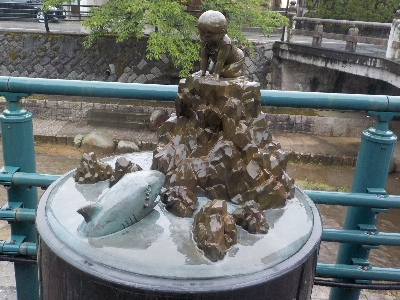
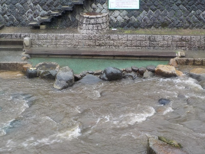
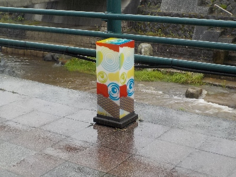

雨の日の玉造温泉街
2024/06/22
雨ですが、せっかく玉造まで来たので温泉街を散歩しました。
同じような感じで散歩してる人が多かったです。私は行きませんでしたが、玉作湯神社に行く人が沢山いました。

地方に行くとよくある感じのオブジェがありました。あんまり意味ないですけど、なんとなく写真撮っちゃいます。
旅行行きましたって気分に少しなります。

今日は雨で、川の水かさが上がっています。川沿いの足湯とか散歩は無理でした。

いろんな図柄の灯篭がありました。きっと夜になったらいい感じになるんでしょうね。